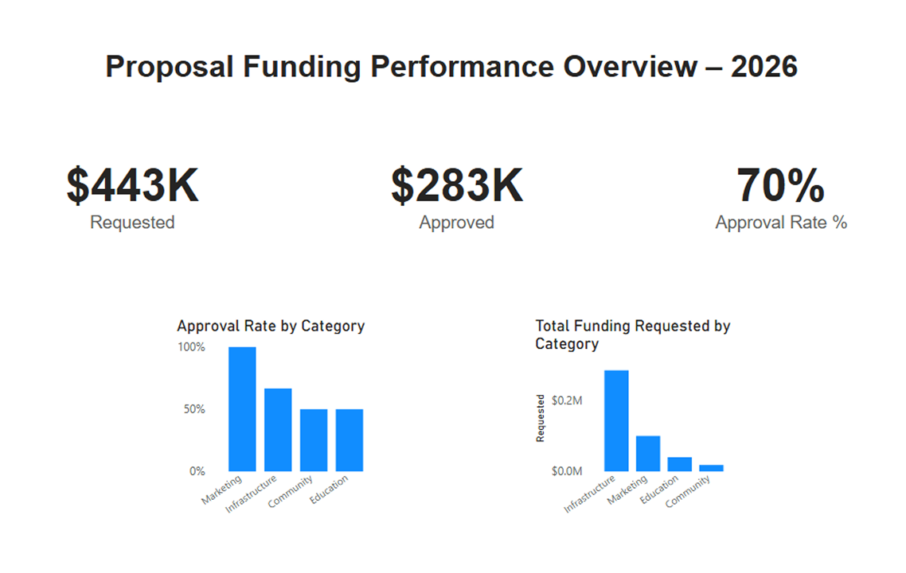
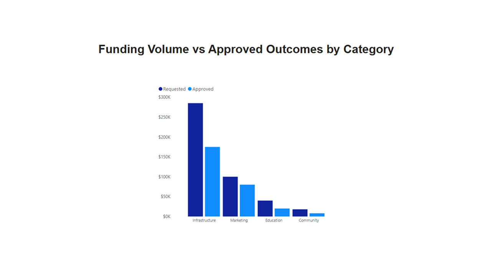
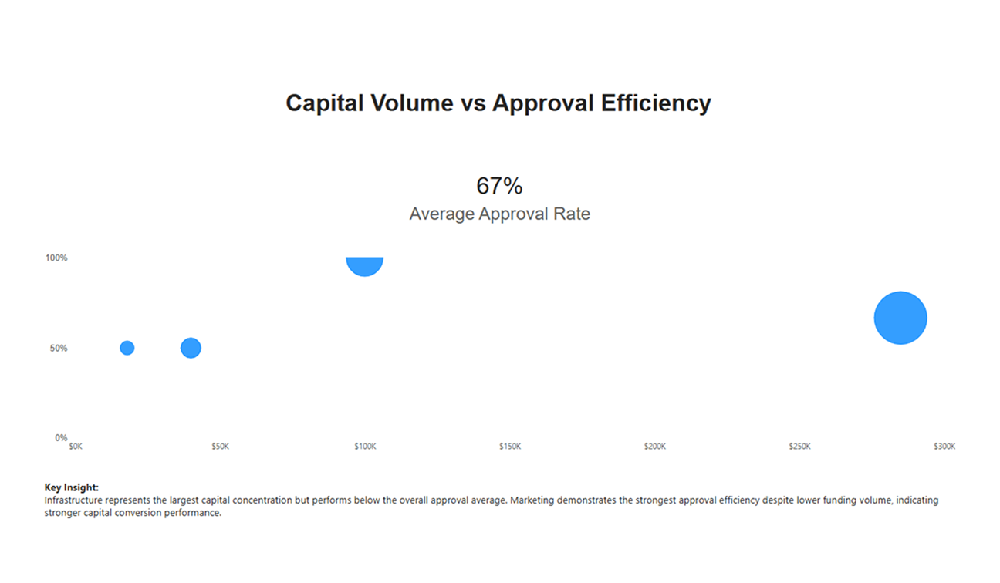

Limited visibility into how funding requests translated into approved allocations
Within the NEAR Treasury governance platform, contributors submit funding proposals requesting capital for ecosystem initiatives. While supporting platform enhancements, I observed that proposal data existed within the platform but lacked structured reporting to evaluate funding performance across categories.
Key gaps included:
To address this gap, I built a Power BI model to analyze proposal requests, approvals, and category-level performance, enabling structured evaluation of funding efficiency.

Evaluate funding conversion efficiency and category-level performance variance
Key questions:
Proposal data was structured in Power BI using standardized performance metrics to enable clear category comparison
Key performance metrics included:
Designed for side-by-side category comparison and repeatable KPI tracking.

Approval efficiency and capital concentration varied significantly across categories
Approval efficiency and capital concentration varied materially across categories, indicating allocation imbalances and differences in funding performance. Analysis revealed up to a 30% variance in approval efficiency between top and bottom-performing categories.

Establish a reusable KPI framework for tracking funding efficiency
Enabled:
This analysis enabled leadership to evaluate funding performance at a system level rather than reviewing proposals individually.